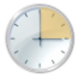
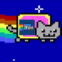

ChatGPT镜像站
HomoのWebsite
谷歌搜索镜像站
AList主站

AList-taskschd

技术分享站-MEMZ-MEMZ-Chrome
彩虹外链网盘
cloudreve网盘
BT
管理文件
管理路由器
监控系统
我的博客
爱快云
音乐
相册
视频
迅雷远程
下载管理
BT
设置
管理文件
管理路由器
监控系统
 管理文件
管理文件 管理路由器
管理路由器 监控系统
监控系统 我的博客
我的博客 爱快云
爱快云 音乐
音乐 相册
相册 视频
视频 迅雷远程
迅雷远程 下载管理
下载管理 设置
设置